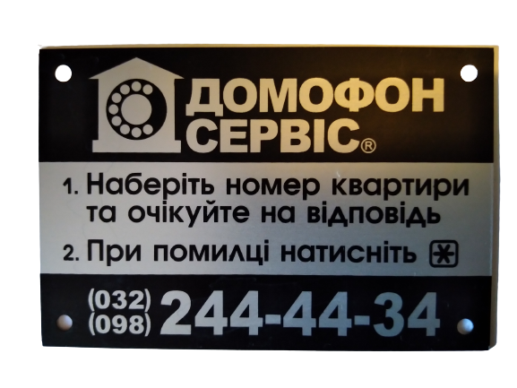
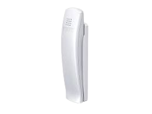
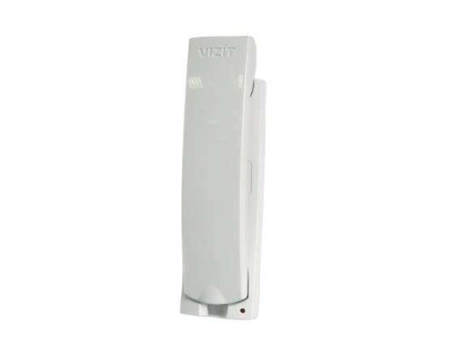
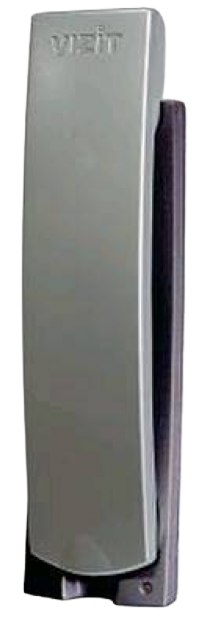
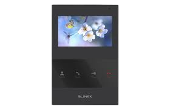
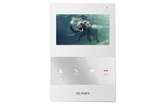
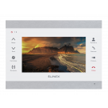
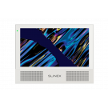
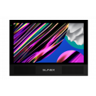
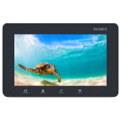

Ми пропонуємо встановити вам в квартиру аудіо трубку або відео панель.
В зв'язку з нестабільною ситуацією на ринку ціни можуть змінюватись.
Будь-ласка, уточніть ціну та наявність продукції в день замовлення, у мененджера.


Укп-7: 250грн

Укп-12: 350грн

Укп-12м: 400грн

SQ-04: 250$, ціну уточнити в мененджера можливі несуттєві зміни.
4,3 кольоровий TFT екран 16:9 / 2 Викликові панелі / Накладна установка

SQ-04M: 250$, ціну уточнити в мененджера можливі несуттєві зміни.
4,3 кольоровий TFT екран 16:9 / Вбудована програмна детекція руху / 2 Викликові панелі / 2
Відеокамери / Підтримка microSD карт об'ємом до 32 ГБ / Інтерком / Програмна детекція руху
(один канал) / Налаштування тривалості виклику / Відображення годинника в режимі очікування

SL-07IPHD: 250$, ціну уточнити в мененджера можливі несуттєві зміни.
Підключення до Інтернету через Wi-Fi або Ethernet-кабель / 7” IPS екран / Підтримка CVBS та
AHD до 2 Мп / Програмна детекція руху

Sonik 7 Cloud: 10200грн
Переадресація виклику на програму Slinex Smart Call / Сенсорний IPS еран високої роздільної
здатності / Підтримка викликових панелей і камер стандартів AHD-H, TVI, CVI, CVBS / MP3
мелодії як мелодія дзвінка / Відеодомофон з двома потужними динаміками та змінними
кольоровими панелями Гнучка настройка роботи фоторамки / MP3 мелодії в якості мелодії виклику

Sonik 10: 10200грн
Переадресація виклику на програму Slinex Smart Call / Сенсорний IPS еран високої роздільної
здатності / Підтримка викликових панелей і камер стандартів AHD-H, TVI, CVI, CVBS / MP3
мелодії як мелодія дзвінка / Відеодомофон з двома потужними динаміками та змінними
кольоровими панелями Гнучка настройка роботи фоторамки / MP3 мелодії в якості мелодії виклику

SM-07M 10: 10200грн
Кольоровий домофон / 7" монітор TFT LCD 16:9 / 2 Викликові панелі / 2 Відеокамери / 100 фото
на внутрішню пам'ять + підтримка microSD карт об'ємом до 32 Гб / Інтерком / Колір - срібло,
графіт, білий / 16 мелодій / Регулювання часу відкриття замку